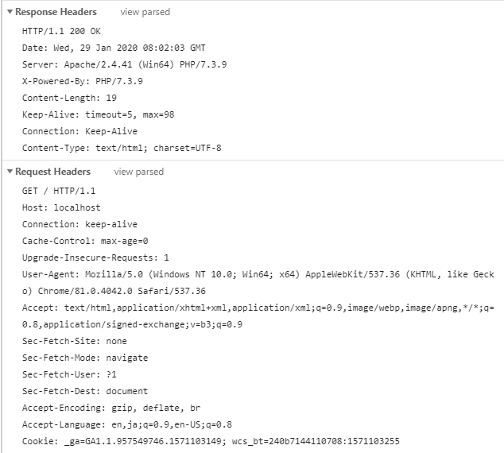
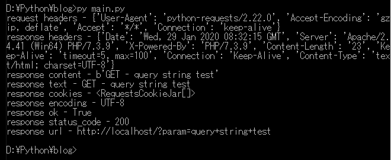
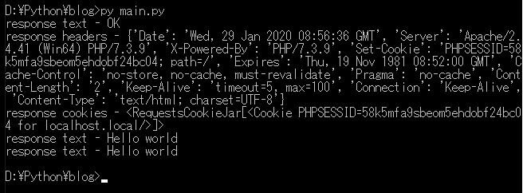

[Python] HttpConnection(requestsモジュール)でウェブサーバーで接続する方法
こんにちは。明月です。
この投稿はPythonでHttpConnection(requestsモジュール)でウェブサーバーで接続する方法に関する説明です。
ウェブサーバーとブラウザの通信は要請、応答構造でなっています。要請はホストアドレスを含めてページを要請することだし、応答は要請に対して応答メッセージ(ヘッダー)とhtmlをブラウザに送信することです。
ウェブページはブラウザでJavascriptが実行してCSS styleに合わせて画面に見えることですが、ブラウザのレンダリングの役割です。
サーバーとブラウザの間の通信はString(byte[])タイプで送受信することだけです。

ローカルにPHPで簡単な例のソースを作成し、pythonでrequest要請して、応答を受けましょう。
<?php
error_reporting(E_ALL & ~E_NOTICE);
// Getタイプの場合、アドレスからパラメータデータを取得する。
echo "GET - ".$_GET["param"];
?>
import requests
# 接続url
url = 'http://localhost/'
# requestsで直接に接続も可能が、要請事項を扱うためにはセッションを生成する。
with requests.Session() as session:
# proxy環境の場合、trust_envをFalseですべき。
# session.trust_env = False
# getタイプでパラメータのparamにデータを格納して要請する。
with session.get(url, params = {'param': 'query string test'}) as response:
# 要請する時のヘッダー(ディクショナリ)
print("request headers - " + str(session.headers))
# 応答する時のヘッダー(ディクショナリ)
print("response headers - " + str(response.headers))
# byteタイプの応答のボディーのデータ
print("response content - " + str(response.content))
# strタイプの応答本文データ
print("response text - " + str(response.text))
# 現在のセッションのクッキー設定
print("response cookies - " + str(response.cookies))
# 本文エンコードタイプ
print("response encoding - " + str(response.encoding))
# 応答成功(200)
print("response ok - " + str(response.ok))
# 応答コード
print("response status_code - " + str(response.status_code))
# 要請する時のurl
print("response url - " + str(response.url))

Pythonでウェブサーバーを接続することを簡単です。requestのモジュールからセッションを受け取ります。後、そのセッションでlocalhostを要請して応答する結果を受け取ります。
応答結果はheadersとtext、contentが一番重要なデータです。
textの結果をみれば、paramのキーでquery string testを送ったので、上のPHPソースの結果通りGET - query string testの結果が出ました。
今回はPostタイプでsession値を入れてGetタイプで値を取得する方法を説明します。
<?php
// PHPセッションを開始する。(ブラウザでSet-Cookieのsession keyが発給される。)
session_start();
error_reporting(E_ALL & ~E_NOTICE);
// POSTタイプの場合
if ($_SERVER["REQUEST_METHOD"] == "POST") {
// POSTのパラメータのDATAをセッションのDATAに格納する。
$_SESSION["DATA"] = $_POST["DATA"];
echo "OK";
} else {
// GETタイプの場合にセッションのDATA値を出力する。
echo $_SESSION["DATA"];
}
?>
import requests
# 接続URL
url = 'http://localhost/'
# requestsで直接に接続も可能が、要請事項を扱うためにはセッションを生成する。
with requests.Session() as session:
# まず、postタイプでDATAパラメータにHello worldの値を入れる。
with session.post(url, data = {'DATA': 'Hello world'}) as response:
# strタイプの応答ボディーデータ
print("response text - " + str(response.text));
# 応答ヘッダー
print("response headers - " + str(response.headers))
# 応答クッキー
print("response cookies - " + str(response.cookies))
# 応答したクッキーの値をcookiesの変数に格納する。
cookies = response.cookies
# cookiesをディクショナリタイプを入れてもよい。
# cookies = {'PHPSESSID': response.cookies["PHPSESSID"]}
# 要請したヘッダーをheadersの変数に格納する。
headers = session.headers
# 次の要請からは別途でクッキー設定をしなくても、同じセッションならクッキーが保持する。
with session.get(url) as response:
# なので結果はHello worldが出力する。
print("response text - " + str(response.text))
# ここは上のRequestのセッションと別のセッション。
with requests.Session() as session:
# セッションを保持すればクッキーを設定すべき。
with session.get(url, headers= headers, cookies = cookies) as response:
# なので、結果はHello worldが出力する。
print("response text - " + str(response.text))

Pythonではrequestsモジュールを使う時、Sessionだけちゃんと管理すれば別にクッキー設定がなくてもセッションの保持が可能です。(C#とJavaと同じ機能があるかどうかしらべなければならないな。)
そうすれば応用でウェブサーバからもloginしてデータを取得することができます。
requestの関数はpost, getのメソッドがるクラスタイプです。
responseは仕様によって様々の関数と変数を使います。下記の表で纏めました。
| 関数及びプロパティ | 説明 |
|---|---|
| apparent_encoding | エンコード値に変換 |
| content | 応答内容をバイト単位で変換 |
| cookies | サーバーから送ったクッキーをCookieJarオブジェクトに変換 |
| elapsed | 要請を送信して応答した時間までの時間、timedeltaオブジェクトを返却 |
| encoding | r.textを快特するエンコードコード |
| headers | 応答ヘッダーのデータをディクショナリタイプで返却 |
| history | 要請ヒストリ(url)を応答オブジェクトリストを返却 |
| is_permanent_redirect | 応答が永久的にリダイレクトされたURLならTrue、そうではなければFalseを返却 |
| is_redirect | 応答がリダイレクトされた場合、True、、そうではなければFalseを返却 |
| links | ヘッダーリンクを返却 |
| next | リダイレクトで次の要請に関するPreparedRequestオブジェクトを返却 |
| ok | status_codeが200より少なければTrue、そうではなければFalseを返却 |
| reason | 状態コードに関するテキストを返却 |
| request | 応答を要請したオブジェクトを返却 |
| status_code | 状態のコードを返却(200はOK、404はNot Found) |
| text | 応答内容をユニーコードで返却 |
| url | 応答のURLを返却 |
| close() | サーバーと連結を閉める。 |
| iter_content() | 応答を繰り返す。 |
| iter_lines() | 応答ラインを繰り返す。 |
| json() | 結果のJSONオブジェクトを返却(結果がエラーが発生してない場合、JSONタイプで作成されたデータ) |
| raise_for_status() | エラーが発生すればこのメソッドはHTTPErrorオブジェクトを返却 |
ウェブサーバーを接続するHttpConnectionオブジェクトはJavaとC#、PHPもあります。筆者のほぼすべての言語で似ているなライブラリが存在します。
個人的にPythonのrequestsモジュールがセッションを保持する方法か、json()関数みたいに自動にjsonタイプを返却する関数や様々な関数やライブラリがもっと楽に構成されています。ローカルスクリプトをよく使う言語でrequestsで情報を自動的に収集するスクレイピングボットやクロリングなどを作成すればいろいろなことで使えるではないかと思います。
link - https://requests.readthedocs.io/en/master/api/
link - https://www.w3schools.com/python/ref_requests_response.asp
link - https://stackoverflow.com/questions/40430799/
ここまでPythonでHttpConnection(requestsモジュール)でウェブサーバーで接続する方法に関する説明でした。
ご不明なところや間違いところがあればコメントしてください。
- [Python] メール(smtplib)を送信する方法2020/07/27 18:38:43
- [Python] HttpConnection(requestsモジュール)でウェブサーバーで接続する方法2020/07/20 14:41:51
- [Python] Excel(openpyxl)を扱う方法2020/07/16 16:40:31
- [Python] ファイル圧縮、解凍(zipfile)する方法2020/07/14 19:14:22
- [Python] Apache cgiでPythonを使う方法2020/07/09 19:58:19
- [Python] Web serverを起動する方法(http.server)2020/07/09 00:13:13
- [Python] WebSocketを使う方法2020/07/07 17:29:18
- [Python] PythonとJavaのソケット通信する方法2020/07/03 18:35:50
- [Python] PythonとC#のソケット通信2020/07/01 19:28:22
- [Design pattern] プロトタイプパターン(Prototype pattern)2021/10/22 19:35:45
- [Project design] プログラム検証とテスト - Unitテスト2021/10/22 19:34:09
- [C#] 57. コーティング規約2021/10/21 18:57:02
- [C#] 56. 値の初期化及び基本データ値(default)を設定する方法、そして原始データのnull処理、?と??の使い方2021/10/21 18:54:41
- [C#] 55.namespaceとusing、そしてpartialの使い方2021/10/21 18:51:39
- [C#] 54. Reflection機能を使い方 - Attribute2021/10/20 19:29:31
- [Project design] プログラム制作(コーディング) - クラス作成方法2021/10/20 19:28:09
- [C#] 53. Reflection機能を使い方 - Propertyとevent2021/10/19 21:02:58
- [Project design] プログラム制作(コーディング) - 関数作成方法2021/10/19 21:01:32
- [CentOs] ジェンキンス(Jenkins)をインストールする方法2021/10/18 18:28:58
- [Project design] 詳細設計(インターフェース設計と抽象化作業)2021/10/18 18:23:15
- [Project design] 基本設計(画面設計とDB設計)2021/10/17 21:21:11
- [Design pattern] 1-4. デザインパターンの抽象ファクトリーパターン(Abstract factory pattern)2021/10/15 19:31:03
- [Project design] 要件定義(要求事項整理)2021/10/15 19:28:58
- [C#] 52. Reflection機能を使い方 - Variable2021/10/15 19:27:37